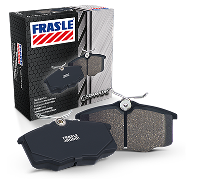
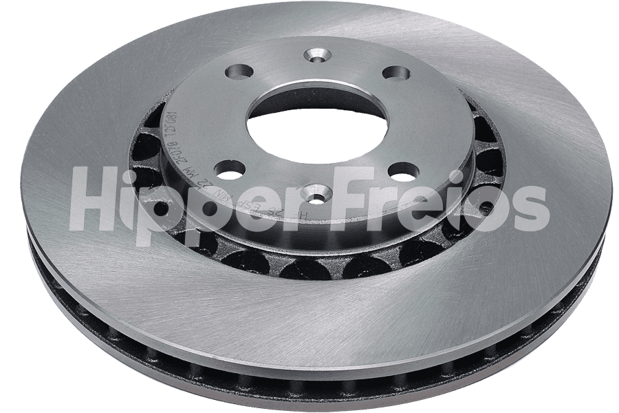
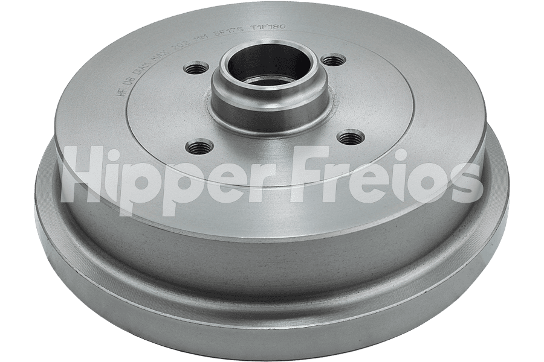
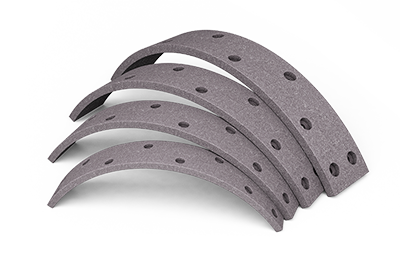
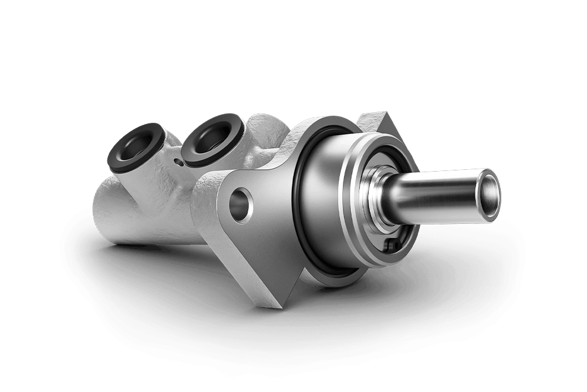

Segurança começa na frenagem. Pastilhas, discos, tambores, lonas, sapatas e componentes hidráulicos das principais marcas do mercado. Consulte a aplicação correta para o seu veículo.
Pastilhas de freio de alta qualidade das marcas líderes do mercado. Formulações cerâmicas e de alto atrito projetadas para estabilidade térmica, frenagem silenciosa e durabilidade.
Marcas em Destaque:FRAS-LESYL
Tecnologia Cerâmica

Pastilha de Freio Fras-le Ceramaxx
Linha cerâmica com fórmula avançada desenvolvida pela Fras-le para proporcionar frenagem silenciosa, redução significativa de poeira residual nas rodas e baixos índices de vibração.
Desenvolvida com composto cerâmico para proporcionar menor desgaste do conjunto disco-pastilha, excelente estabilidade de coeficiente de atrito e menor fuligem.
A espessura do material de atrito deve ser verificada periodicamente. Quando a massa atinge menos de 3 mm, a troca é mandatória para evitar contato do suporte metálico com o disco.
Dica da Oficina Tucano:
Sempre realize o assentamento correto das pastilhas nos primeiros 200 km, evitando frenagens bruscas desnecessárias.
Discos de freio usinados em liga de ferro fundido de alto teor de carbono para tolerar elevados ciclos térmicos e proporcionar frenagem firme e segura.
Código: HF 25
Hipper Freios

Disco de Freio Ventilado Hipper Freios HF 25
Disco de freio dianteiro ventilado com canais internos de aletas que forçam a circulação de ar, dissipando o calor rapidamente e prevenindo o efeito fading.
Código Fabricante:HF 25
Tipo / Eixo:Ventilado / Dianteiro (4 Furos)
Dimensões Oficiais:Ø 256 mm | Esp. 24 mm | TH Min 21 mm
Aplicação Oficial: Chevrolet Vectra 2.0 8V (1994 a 1996), Astra 2.0 (1995), Calibra 2.0 16V (1994 a 1995). Consulte para seu veículo.
Todo disco possui gravada em sua borda a espessura mínima permitida (TH Min). Atingido esse limite, o disco perde resistência estrutural e capacidade térmica, aumentando o risco de trincas graves e perda de freio.
Não ultrapasse o limite de retífica gravado na peça
O tambor de freio atua em conjunto com as sapatas e lonas no eixo traseiro. A integridade da sua superfície interna é decisiva para a desaceleração segura e a retenção firme no freio de estacionamento.
Código: HF 08
Hipper Freios

Tambor de Freio Traseiro Hipper Freios HF 08
Tambor traseiro usinado com alta precisão dimensional e liga de ferro fundido resistente a deformações térmicas, assegurando assentamento uniforme das lonas.
Código Fabricante:HF 08
Tipo / Eixo:Traseiro (sem cubo) | 4 Furos
Dimensões Oficiais:Ø Int: 180 mm | Ø Máx: 181 mm | Altura: 66,5 mm
Aplicação Oficial: Volkswagen Gol 1.0/1.6/1.8/2.0 (1980 a 1994), Parati (1982 a 1995), Saveiro (1982 a 1995), Voyage (1982 a 1995). Consulte para seu veículo.
As sapatas servem de armação metálica estrutural sobre as quais são aplicadas as lonas de atrito. Ao serem acionadas pelo cilindro de roda, expandem-se contra a pista do tambor para desaceleração controlada.
Marcas:FRAS-LESYL
Material de Fricção

Jogo de Lonas de Freio Fras-le
Material de fricção concebido para suportar atrito contínuo em sistemas de freio a tambor, garantindo frenagem balanceada e excelente durabilidade sem cristalização da superfície.
Fornecida com lonas pré-moldadas e coladas sob rigoroso padrão dimensional. Excelente retenção estática no freio de mão e acoplamento suave no tambor traseiro.
O conjunto de molas e componentes de montagem possui função indispensável no funcionamento adequado do sistema de freio a tambor, garantindo que as sapatas retornem à posição de repouso após a soltura do pedal.
Molas de Retorno
Evitam que a lona permaneça em atrito involuntário contra o tambor após o desacionamento, eliminando superaquecimento, perda de combustível e desgaste precoce.
Segurança de Desengate
Pinos e Travas de Fixação
Mantêm as sapatas perfeitamente alinhadas contra o prato de freio, impedindo torções laterais que causam ruídos e frenagem desbalanceada.
Alinhamento Perfeito
Linha Disponível
Kit Completo de Fixação
Recomendado substituir o kit de molas a cada troca de sapatas, pois a fadiga do metal reduz a força de retorno com o tempo.
A Controil é a marca de referência nacional em segurança hidráulica automotiva. Disponibilizamos cilindros de roda e cilindros mestres com acabamento rigoroso e máxima estanqueidade.
Pressão Principal

Cilindro Mestre de Freio Controil
Converte a força exercida pelo pedal em pressão hidráulica balanceada entre os eixos. Produzido com tolerâncias micrométricas e retentores de alta estanqueidade.
Fabricante:Controil
Linha:Cilindros Mestres de Freio
Aplicação:Veículos Leves e Utilitários
Consulte veículo e circuitoConsulte Disponibilidade
Atuador hidráulico responsável por abrir as sapatas contra o tambor. Corpo usinado com retentores resistentes a fluido de freio DOT e ciclos repetidos de pressão.
O sistema de freios trabalha diretamente na segurança ativa do veículo e sofre desgaste natural a cada acionamento. A manutenção preventiva ajuda a identificar o desgaste antes que ele comprometa a eficiência da frenagem.
Segurança Ativa
O sistema precisa responder com exatidão e prontidão absoluta sempre que o motorista necessitar reduzir a velocidade ou imobilizar o veículo.
Distância de Frenagem
Componentes desgastados ou superaquecidos aumentam consideravelmente o espaço necessário para parada total, elevando o risco de colisão.
Controle do Veículo
Problemas em cilindros, discos ou pinças podem afetar a estabilidade direcional, fazendo o veículo puxar para os lados em desacelerações.
Economia Preventiva
A identificação antecipada do desgaste evita que um componente danifique outro, como uma pastilha gasta que risca e destrói um disco novo.
Mecânica do Atrito
Como Funciona o Conjunto Pastilha + Disco?
O princípio da frenagem a disco se baseia na conversão de energia cinética (movimento) em energia térmica (calor) por meio do atrito mecânico rigorosamente controlado.
Passo 1PASTILHAPressionada pela pinça hidráulica
Passo 2ATRITO CONTROLADOGera fricção sobre a face do disco
Passo 3DISCO DE FREIODissipa o calor gerado
ResultadoREDUÇÃO SEGURADesaceleração progressiva do veículo
Papel da Pastilha:
Fica em contato direto com o disco, suportando calor extremo. Possui material de fricção sacrificial formulado para se desgastar de forma homogênea. Quando atinge o limite recomendado, deve ser trocada imediatamente para não danificar o disco.
Papel do Disco de Freio:
Gira junto com a roda e recebe o atrito da pastilha. Também sofre desgaste gradual e possui limite de espessura mínima gravado em sua borda. Deve ser substituído quando estiver abaixo da tolerância ou apresentar empenamento e trincas.
Sistema Traseiro Integrado
Como Funciona o Freio a Tambor?
Muito comum nas rodas traseiras de automóveis e utilitários, o freio a tambor opera de dentro para fora: o cilindro de roda expande as sapatas revestidas por lonas contra o interior do tambor giratório.
1. TamborPista circular de atrito
2. SapataEstrutura metálica semicircular
3. LonaMaterial de fricção colado/rebitado
4. CilindroAtuador hidráulico de abertura
5. MolasRetorno mecânico de desengate
Atenção Técnica: No sistema a tambor, os componentes trabalham de forma totalmente interligada. Por isso, não basta substituir apenas uma peça sem inspecionar cilindros de roda, estado das molas e desgaste do tambor.
Critério Real de Manutenção
Quando trocar as pastilhas de freio?
A vida útil das pastilhas NÃO é igual para todos os veículos. Ela é influenciada diretamente por diversos fatores operacionais:
Peso e CargaVeículos pesados demandam mais energia de atrito
Estilo de ConduçãoFrenagens graduais preservam mais o conjunto
Trânsito e CidadePara-e-anda urbano eleva o desgaste mecânico
Topografia e RelevoRegiões serranas exigem freio motor e discos ventilados
Em muitos veículos, a inspeção periódica preventiva já deve fazer parte das revisões a cada 10.000 km e pode ser antecipada em uso severo. A substituição ocorre conforme o desgaste medido na peça, e não apenas pelo hodômetro.
Importante: quilometragem é referência de inspeção, não garantia de vida útil.
Medição & Tolerâncias
E os discos de freio?
A regra fundamental na mecânica automotiva é clara: a condição física e a espessura do disco são mais importantes do que uma quilometragem fixa.
Espessura Mínima Gravada (TH Min):
Medida com micrômetro no ponto de maior desgaste; abaixo desse limite, a substituição é obrigatória.
Empenamento e Vibração:
Variação de espessura (DTV) provoca trepidação no pedal ou volante durante as frenagens.
Trincas Térmicas e Rebarbas:
Ciclos térmicos extremos podem criar microfissuras que comprometem a integridade do disco.
Sempre verificar a espessura mínima especificada para aquele disco/veículo.
Uso Severo em Nova Friburgo/RJ
Seu carro trabalha em condição severa?
Topografia de serra com descidas íngremes e contínuas, trânsito urbano com paradas frequentes, transporte por aplicativo, carga e reboque exigem muito mais do conjunto de freios.
"Quanto mais severo o uso, maior deve ser a frequência das inspeções físicas."
Diretrizes de Revisão Profissional:
✔Consulte o manual do veículo como guia prioritário
✔Faixa orientativa: inspecionar a cada 10.000 km
✔Avaliar pastilhas dianteiras e sapatas traseiras
✔Testar ponto de ebulição do fluido de freio anualmente
Diagnóstico Preventivo
Seu carro está dando sinais?
O veículo quase sempre avisa quando algum componente de freio atinge o limite. Fique atento a estes sintomas e não adie a revisão.
🚨
Chiado ou Ruído Anormal
Pode indicar pastilha desgastada, acúmulo de sujeira ou vidramento do material de atrito.
🚨
Vibração no Pedal ou Volante
Sinal característico de disco de freio empenado ou variação de espessura na pista de contato.
🚨
Pedal Muito Baixo
Sensação esponjosa sugere ar no circuito hidráulico, perda de pressão ou vazamento de fluido.
🚨
Pedal Excessivamente Duro
Dificuldade para frear pode indicar falha no servo freio (hidrovácuo) ou travamento mecânico.
🚨
Veículo Puxando para um Lado
Pistão de pinça travado ou cilindro de roda inoperante desbalanceiam a frenagem lateral.
🚨
Ruído Metálico Forte
Indica que a pastilha acabou por completo e o suporte de ferro está destruindo o disco.
🚨
Luz de Freio Acesa no Painel
Alerta de nível baixo de fluido no reservatório ou desgaste no sensor elétrico da pastilha.
🚨
Fluido Baixando ou Vazamento
Manchas no chão próximo às rodas ou flexíveis úmidos exigem reparo emergencial imediato.
Mensagem de Segurança Tucano Auto Peças
Se houver alteração importante no sistema de frenagem, procure avaliação profissional antes de continuar utilizando o veículo. Não faça viagens ou desça a serra com sinais ativos de falha nos freios.
Prevenção Responsável
O que pode acontecer quando o sistema de freios é ignorado?
Aumento da Distância de Parada
Pastilhas gastas ou cristalizadas perdem coeficiente de atrito, exigindo muito mais espaço e tempo para conter o carro.
Fading por Superaquecimento
Discos finos não conseguem dissipar calor em declives de serra, levando à perda repentina da capacidade de frenagem.
Danos em Cadeia no Conjunto
Uma pastilha gasta destrói o disco; um cilindro travado queima lonas e deforma tambores, triplicando o custo da oficina.
Perda de Estabilidade e Controle
Diferenças de pressão ou atrito entre as rodas podem provocar rodopios involuntários em frenagens emergenciais.
Inspeção Completa
Checklist do Sistema de Freios
Antes de pegar a estrada ou na sua revisão periódica, garanta que os 12 itens cruciais foram devidamente avaliados por um mecânico de confiança.
✓Espessura das pastilhas de freio
✓Espessura e superfície dos discos
✓Diâmetro e estado dos tambores traseiros
✓Espessura das lonas de freio
✓Alinhamento das sapatas de freio
✓Estanqueidade dos cilindros de roda
✓Pressurização do cilindro mestre
✓Nível e ponto de ebulição do fluido
✓Integridade dos flexíveis e mangueiras
✓Inspeção contra vazamentos visíveis
✓Ausência de ruídos e vibrações
✓Regulagem do freio de estacionamento
Precisa verificar alguma dessas peças?
Envie os dados do seu veículo pelo WhatsApp para receber a cotação e a especificação exata das peças para sua manutenção.
Trabalhamos com marcas homologadas pelas principais montadoras, garantindo procedência, precisão dimensional e durabilidade.
SYL
Pastilhas, lonas e sapatas de freio com alto padrão de acabamento e ampla cobertura de aplicações nacionais e importadas.
Linha de Atrito & Sapatas
Fras-le
Referência mundial em materiais de fricção, pastilhas e lonas de alta tecnologia com homologação de montadora.
Segurança Global de Frenagem
Hipper Freios
Líder na fabricação de discos e tambores de freio, reconhecida pelo balanceamento preciso e tecnologia de dissipação térmica.
Discos & Tambores de Precisão
Controil
Especialista em componentes hidráulicos automotivos, fornecendo cilindros de roda, cilindros mestres e kits de reparo de alta estanqueidade.
Sistemas Hidráulicos & Reparos
Tire suas Dúvidas
Perguntas Frequentes sobre Freios
Respostas técnicas e transparentes para as dúvidas mais comuns de motoristas e mecânicos.
De quanto em quanto tempo devo verificar as pastilhas?
Recomenda-se realizar uma inspeção preventiva visual e de espessura a cada 10.000 km rodados ou semestralmente, junto com o alinhamento e balanceamento do veículo. Em condições de uso severo (trânsito urbano pesado ou relevo serrano), a verificação deve ser antecipada.
Existe uma quilometragem fixa para trocar as pastilhas?
Não existe uma quilometragem universal fixa. A durabilidade das pastilhas depende do peso do veículo, estilo de condução, tipo de relevo e trânsito. A substituição deve ser definida pela espessura remanescente da massa de atrito (geralmente abaixo de 3 mm) e não apenas pelo hodômetro.
Quando os discos precisam ser substituídos?
Os discos devem ser substituídos ao atingirem a espessura mínima de segurança (TH Min) gravada na borda pelo fabricante, ou antes disso se apresentarem empenamento (causando vibração no pedal), trincas térmicas, rebarbas acentuadas ou sulcos profundos.
Posso trocar apenas as pastilhas?
Sim, desde que os discos estejam dentro da espessura mínima de segurança e com a superfície de contato perfeitamente plana e sem ondulações. Se o disco estiver no limite ou irregular, a pastilha nova não assentará de maneira uniforme, reduzindo a eficiência e desgastando-se precocemente.
Como saber se o tambor de freio está ruim?
Sinais como freio de mão alto que não regula, perda de eficiência traseira, pedal com pulsação ou ruído raspante ao frear indicam necessidade de inspeção. O tambor deve ser medido com micrômetro interno e substituído caso exceda o diâmetro máximo permitido ou apresente espelhamento e trincas.
Qual a diferença entre lona e pastilha?
A pastilha trabalha por compressão contra a face externa de um disco metálico giratório (freio a disco, comum no eixo dianteiro). A lona de freio é o material de atrito fixado ou colado à sapata, que se expande contra a parte interna do tambor (freio a tambor, comum no eixo traseiro).
Para que serve o cilindro de roda?
O cilindro de roda é o componente hidráulico localizado dentro do freio a tambor. Ao pisar no freio, a pressão do fluido empurra seus pistões internos para fora, pressionando as sapatas e lonas contra a parede interna do tambor para frear a roda.
Quando devo trocar o reparo do cilindro?
O reparo (coifas e gaxetas) deve ser inspecionado sempre que houver intervenção no freio a tambor. Caso haja vazamento de fluido, borracha ressecada ou corrosão superficial interna, o reparo ou a peça completa deve ser substituída imediatamente para evitar perda de pressão hidráulica.
Por que o carro vibra quando freio?
A vibração sentida no pedal de freio ou no volante durante a frenagem geralmente é causada por empenamento térmico nos discos de freio, variação de espessura (DTV) ou tambores traseiros ovalizados, além de possíveis folgas na suspensão.
O que fazer quando o pedal fica muito baixo?
Pedal baixo ou "borrachudo" é sinal de risco imediato. Pode indicar presença de ar no circuito hidráulico, vazamento de fluido de freio em cilindros ou flexíveis, fluido contaminado/fervido ou falha interna no cilindro mestre. Pare o veículo com segurança e procure assistência especializada.
Posso continuar rodando se o freio estiver fazendo barulho?
Não é recomendado. Chiados leves podem ser acúmulo de pó ou falta de chanfro/antirruído, mas ruídos agudos ou metálicos fortes indicam pastilhas no limite extremo (ferro com ferro), danificando irremediavelmente os discos e elevando o risco de colisão.
Componentes complementares para a revisão segura do seu veículo
Atendimento Técnico Especializado
Precisa encontrar a peça certa para o seu carro?
Envie marca, modelo, ano, motor e, quando possível, a referência da peça ou número do chassi. Nossa equipe em Nova Friburgo verifica a aplicação exata com agilidade e precisão.